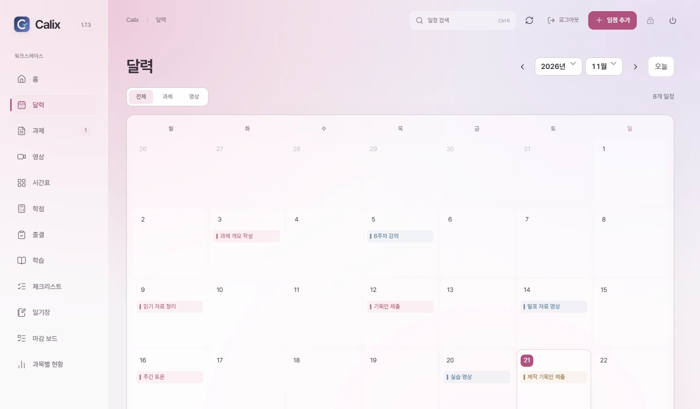

부산외대 수업 일정 관리
Canvas 과제와 영상 마감일을 달력에 표시합니다.

Calix 달력 화면 (예시 일정)
2026 대학혁신을 위한 아이디어 공모전 출품작
주요 기능
과제와 영상
마감일과 완료 여부를 확인하고, 필요한 일정은 체크리스트에 추가할 수 있습니다.
동기화 방법
시간표
학기별로 시간표를 저장하고, 홈에서 메인 학기를 바꿀 수 있습니다.
시간표 설정
출결과 학점
수업별 출결을 확인하고, 과목별 성적을 입력해 학점을 계산할 수 있습니다.
출결 확인
Calix 다운로드
Windows 10/11, x64
iOS 출시 예정